Tekst, akkorder og melodi
Traditionelle børnesange med tekst, akkorder over ordene og en melodi, som telefonen spiller – til godnat, leg, årstider og jul.
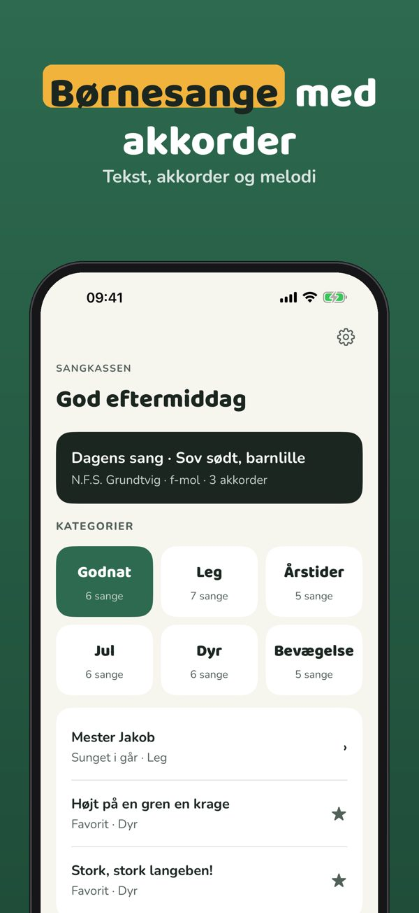
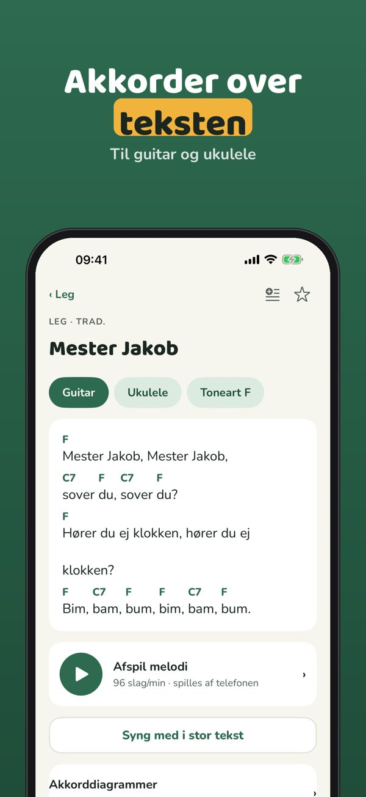
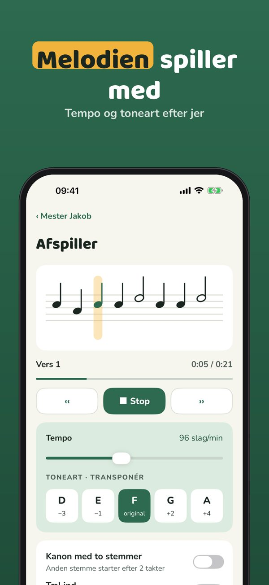
Sangkassen er en sangbog med traditionelle børnesange: tekst, akkorder til guitar og ukulele og en melodi, der spilles af telefonen.
15 sange med tekst og melodi, sanghjulet, favoritter og stor tekst kan bruges uden køb. Plus er et engangskøb, der låser alle sange, akkorder, transponering og spillelister op. Intet abonnement.
Sangkassen indeholder kun traditionelle sange eller sange, hvor ophavsretten er udløbet. Kilden står ved hver sang. Melodien laves på telefonen – ingen optagelser. Ingen reklamer, ingen konto.
Terms of Use (EULA): https://www.apple.com/legal/internet-services/itunes/dev/stdeula/
Privacy: https://baytechbv.github.io/privacy/sangkassen-nordic/
Terms of Use (EULA): https://www.apple.com/legal/internet-services/itunes/dev/stdeula/
Privacy: https://baytechbv.github.io/privacy/sangkassen-nordic/
Sanat, soinnut ja melodia
Perinteisiä lastenlauluja sanoineen, soinnut sanojen yllä ja melodia, jonka puhelin soittaa – nukkumaan, leikkiin, vuodenaikoihin ja jouluun.
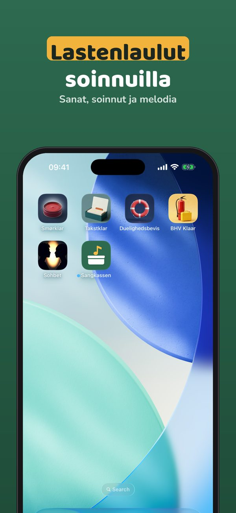
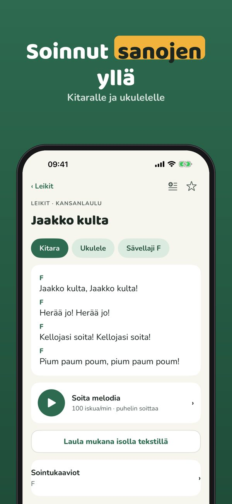
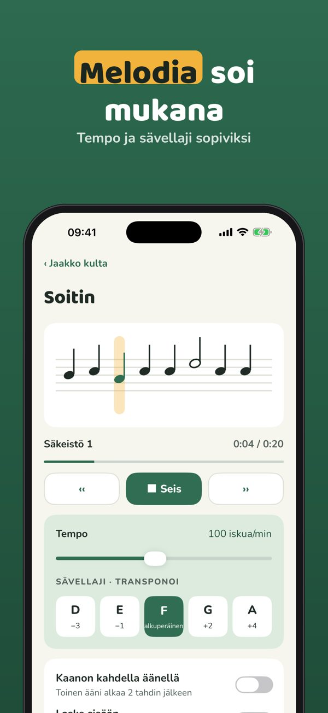
Laulupussi on perinteisten lastenlaulujen laulukirja: sanat, soinnut kitaralle ja ukulelelle sekä melodia, jonka puhelin soittaa.
15 laulua sanoineen ja melodioineen, laulupyörä, suosikit ja iso teksti ovat käytössä ilman ostoa. Plus on kertaosto, joka avaa kaikki laulut, soinnut, transponoinnin ja soittolistat. Ei tilausta.
Laulupussi sisältää vain perinteisiä lauluja tai lauluja, joiden tekijänoikeus on päättynyt. Lähde näkyy jokaisen laulun kohdalla. Melodia syntyy puhelimessa – ei äänitteitä. Ei mainoksia, ei tiliä.
Terms of Use (EULA): https://www.apple.com/legal/internet-services/itunes/dev/stdeula/
Privacy: https://baytechbv.github.io/privacy/sangkassen-nordic/
Terms of Use (EULA): https://www.apple.com/legal/internet-services/itunes/dev/stdeula/
Privacy: https://baytechbv.github.io/privacy/sangkassen-nordic/
Tekst, akkorder og melodi
Tradisjonelle barnesanger med tekst, akkorder over ordene og en melodi som telefonen spiller – til leggetid, lek, årstider og jul.
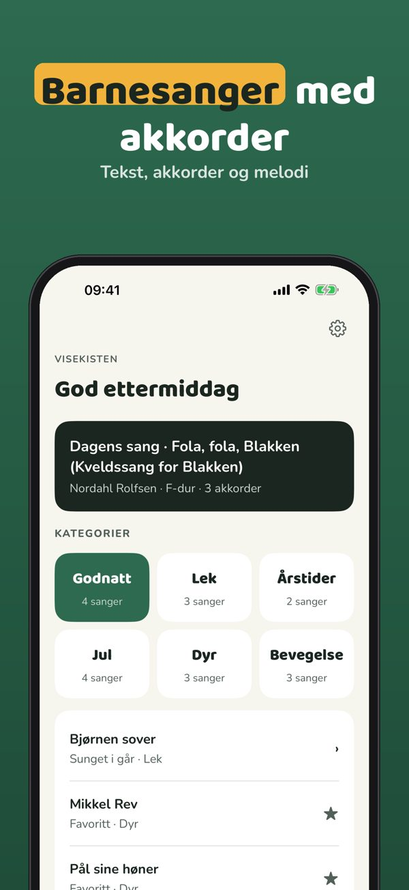
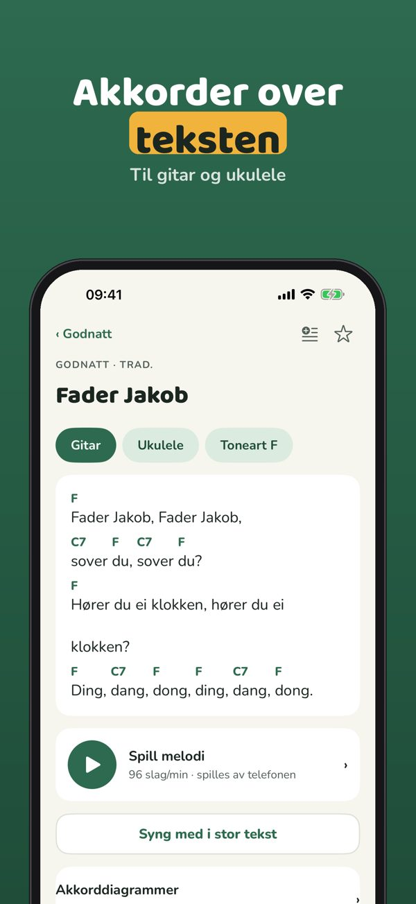
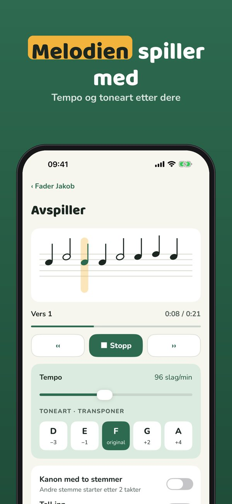
Visekisten er en sangbok med tradisjonelle barnesanger: tekst, akkorder til gitar og ukulele og en melodi som telefonen spiller.
15 sanger med tekst og melodi, sanghjulet, favoritter og stor tekst kan brukes uten kjøp. Plus er et engangskjøp som låser opp alle sanger, akkorder, transponering og spillelister. Ingen abonnement.
Visekisten inneholder bare tradisjonelle sanger eller sanger der opphavsretten er utløpt. Kilden står ved hver sang. Melodien lages på telefonen – ingen opptak. Ingen reklame, ingen konto.
Terms of Use (EULA): https://www.apple.com/legal/internet-services/itunes/dev/stdeula/
Privacy: https://baytechbv.github.io/privacy/sangkassen-nordic/
Terms of Use (EULA): https://www.apple.com/legal/internet-services/itunes/dev/stdeula/
Privacy: https://baytechbv.github.io/privacy/sangkassen-nordic/
Text, ackord och melodi
Traditionella barnvisor med text, ackord ovanför orden och en melodi som telefonen spelar – till läggdags, lek, årstider och jul.
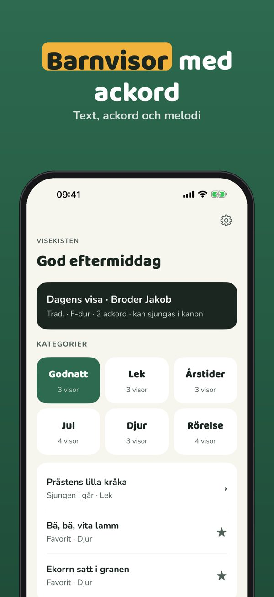
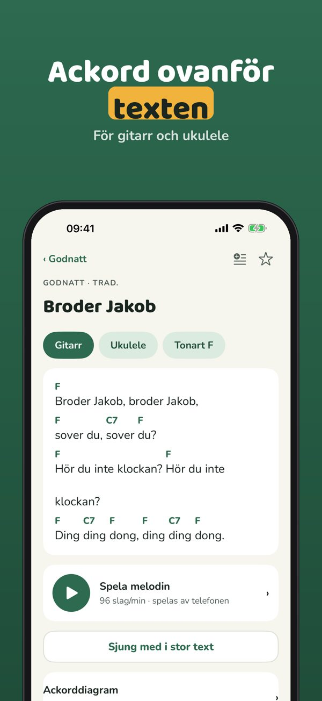
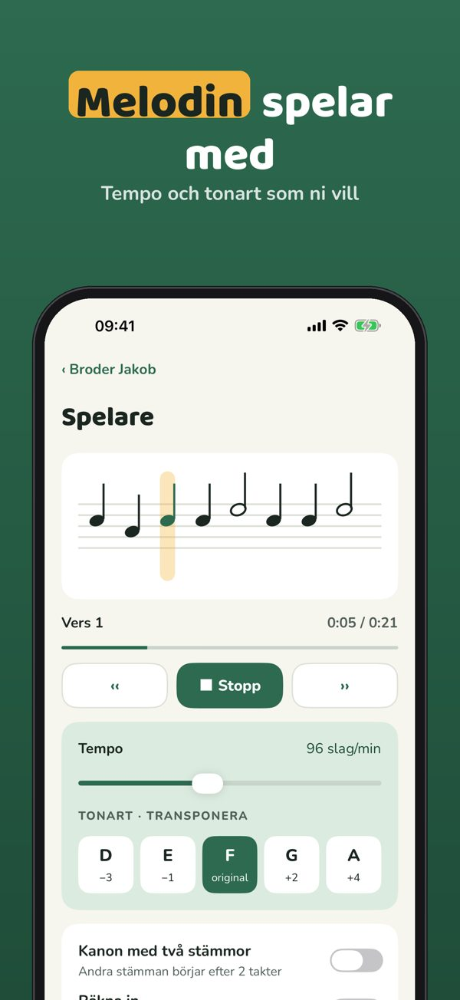
Visekisten är en sångbok med traditionella barnvisor: text, ackord för gitarr och ukulele och en melodi som telefonen spelar.
15 visor med text och melodi, sånghjulet, favoriter och stor text kan användas utan köp. Plus är ett engångsköp som låser upp alla visor, ackord, transponering och spellistor. Ingen prenumeration.
Visekisten innehåller bara traditionella visor eller visor där upphovsrätten har löpt ut. Källan står vid varje visa. Melodin skapas i telefonen – inga inspelningar. Ingen reklam, inget konto.
Terms of Use (EULA): https://www.apple.com/legal/internet-services/itunes/dev/stdeula/
Privacy: https://baytechbv.github.io/privacy/sangkassen-nordic/
Terms of Use (EULA): https://www.apple.com/legal/internet-services/itunes/dev/stdeula/
Privacy: https://baytechbv.github.io/privacy/sangkassen-nordic/
Tekst, akkoorden en melodie
Traditionele kinderliedjes met tekst, akkoorden boven de woorden en een melodie die je telefoon speelt – voor het slapengaan, spelen, seizoenen en kerst.
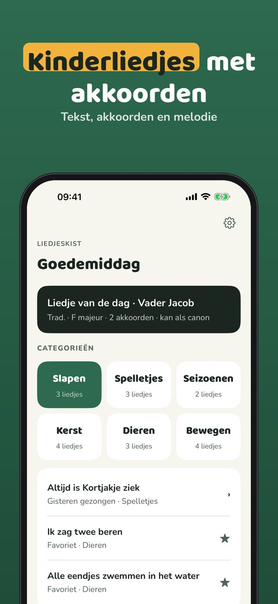
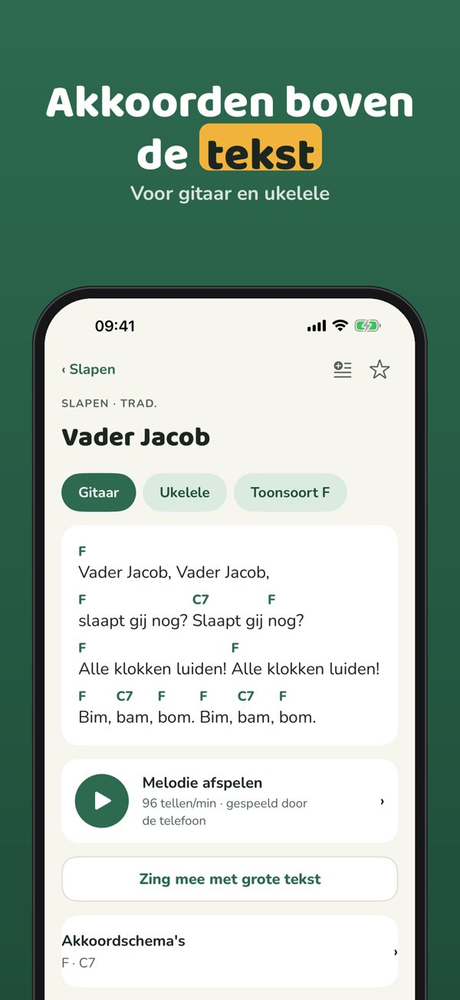
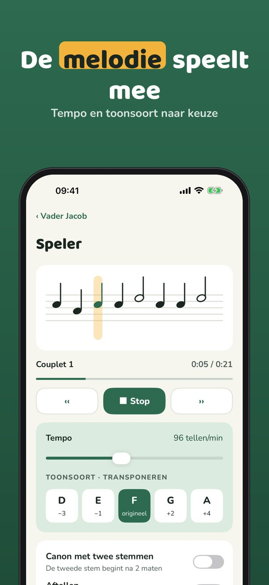
Liedjeskist is een liedboek met traditionele kinderliedjes: tekst, akkoorden voor gitaar en ukulele en een melodie die je telefoon speelt.
15 liedjes met tekst en melodie, het liedjeswiel, favorieten en grote tekst gebruik je zonder aankoop. Plus is een eenmalige aankoop voor alle liedjes, akkoorden, transponeren en afspeellijsten. Geen abonnement.
Liedjeskist bevat alleen traditionele liedjes of liedjes waarvan het auteursrecht is verlopen. De bron staat bij elk liedje. De melodie wordt op de telefoon gemaakt – geen opnames. Geen reclame, geen account.
Terms of Use (EULA): https://www.apple.com/legal/internet-services/itunes/dev/stdeula/
Privacy: https://baytechbv.github.io/privacy/sangkassen-nordic/
Terms of Use (EULA): https://www.apple.com/legal/internet-services/itunes/dev/stdeula/
Privacy: https://baytechbv.github.io/privacy/sangkassen-nordic/